How to use ChroniVue
Every screen and setting, explained in plain words. Search for what you need or jump to a topic.
Nothing found. Try another word, or ask us.
1Getting started
- Allow camera and location. When ChroniVue opens for the first time, allow the camera, and allow location so the place can be printed on your photos. Allow the microphone if you want sound in videos.
- Turn on phone location. If the phone's location is off, ChroniVue asks you to turn it on with one tap. The first fix outdoors usually takes a few seconds; the satellite count (🛰) shows on screen while it searches.
- Take a photo. Press the round shutter button. The date, time and location are stamped on the photo, which is saved in your gallery.
- Make it yours. Open Settings (gear icon) to choose what the stamp shows, add your company name and logo, a map or a QR code.
Tip: the stamp preview at the top of Settings changes live, so you can see each setting before you take a photo.
★Quick how-to
The most asked questions. Tap See picture to jump to a marked screenshot.
The ⚙ Settings button is at the top right of the camera screen. You can also tap Settings in the bottom bar.
2Camera screen
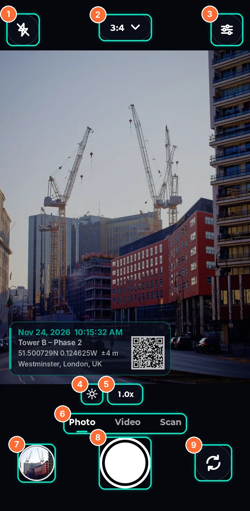
Buttons on the camera screen
- Flash Tap to switch: Off → Auto → On → Flashlight (light stays on).
- Frame size 3:4, 9:16 or Full screen.
- Settings Opens all settings.
- Brightness (exposure) Make the picture lighter or darker before you shoot.
- Zoom Shows the zoom level. Tap it to change the zoom.
- Photo · Video · Scan Choose what you want to do.
- Gallery Opens your latest photo or video.
- Shutter Takes the photo, or starts and stops a video.
- Switch camera Front or back camera.
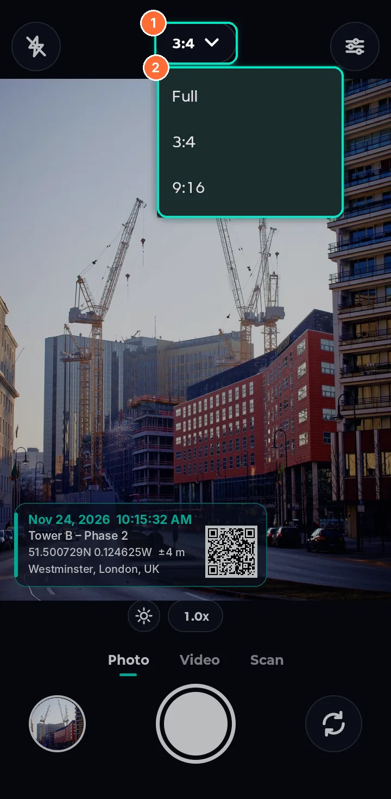
Change the frame size
- Tap 3:4 at the top of the camera screen.
- Pick a size Full, 3:4 or 9:16. The stamp moves with the frame, so it always stays inside the photo.
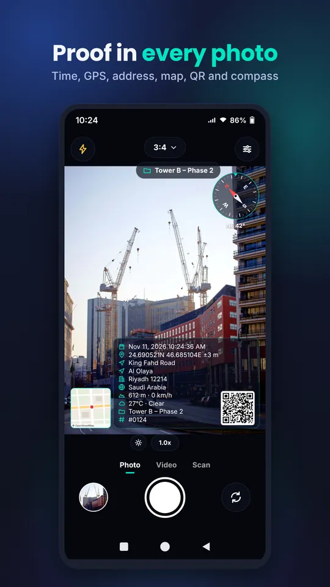
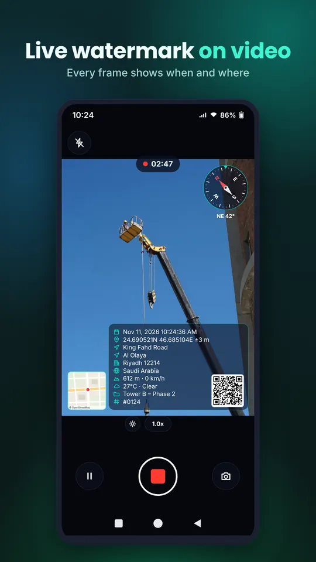
Photo · Video · Scan
Tap the mode names above the shutter to switch between photos, video and the document scanner.
Flash
Tap the flash icon to cycle: Off → Auto → On → Flashlight. Flashlight keeps the light on while you frame and take photos.
Frame size
Choose 3:4, 9:16 or Full screen. The stamp moves with the frame, so it always sits inside the photo.
Switch camera
Use the switch button, or double-tap the preview if Double-tap to switch camera is on.
Gallery button
Shows your latest photo or video. Tap it to open the file. After quick shooting it waits until every photo is saved.
Compass
Shows the direction you face. Press and hold the compass to change its look, position, size and opacity.
Quick buttons
Optional buttons for project, before/after compare, self-timer, custom text, tag and screen lock. Turn them on in Settings → Main screen.
Screen lock
Locks the touch screen so nothing is pressed by accident, for example while recording in a pocket. Press and hold the lock to unlock.
Video
The stamp is added while you record, so the video is ready the moment you stop. Turn on Background recording to keep recording with the screen off.
3Document scanner
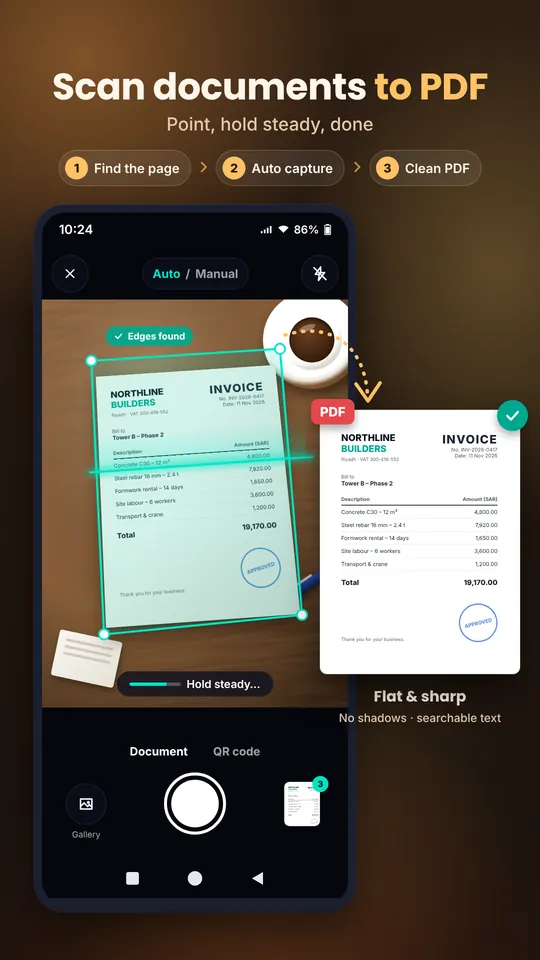
- Open Scan. Choose Scan on the camera screen. Turn on Scan tab in Settings if you don't see it.
- Point at the page. A frame snaps to the four corners. In Auto mode the photo is taken by itself once you hold steady; in Manual mode press the button. Tap Auto / Manual to switch.
- Adjust corners. Drag any corner to the page edge if needed, or choose Full image. Then tap Next.
- Add more pages. Keep scanning, up to 200 pages. You can also scan photos from your gallery.
- Review. For each page you can crop again, rotate, delete or pick a filter: Auto, Original, Vivid, Natural, Gray, B&W. New pages use the last filter you chose.
- Save. Tap Done, enter a file name and choose Images, PDF or Both.
Watermark strip
Adds the date, time and location as a strip below each page, so no text on the paper is covered.
Copyable text in PDF
Reads English (Latin) text on your phone, so you can search and copy text in the PDF. Works without internet.
Tip: good light and a dark surface under white paper give the fastest, cleanest corner detection.
4QR code reader
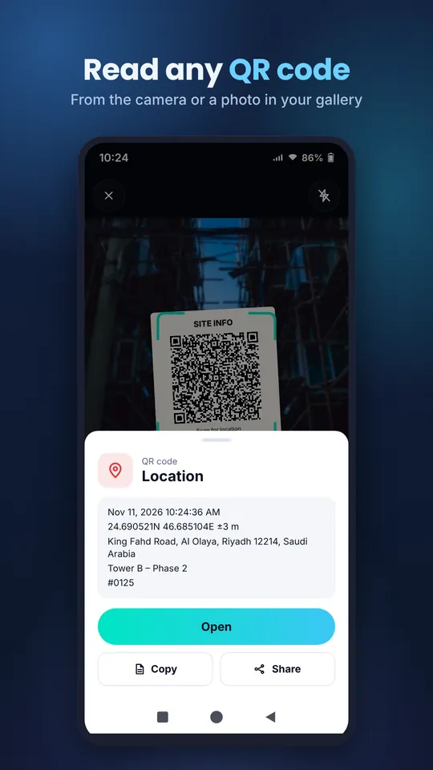
In Scan mode, choose QR code and point the camera at a code, or pick a photo from the gallery. ChroniVue shows what the code holds and lets you open a website, call a number, send an email, copy a Wi-Fi password, open a location, copy or share. It never opens a link without asking you.
5Projects & PDF reports
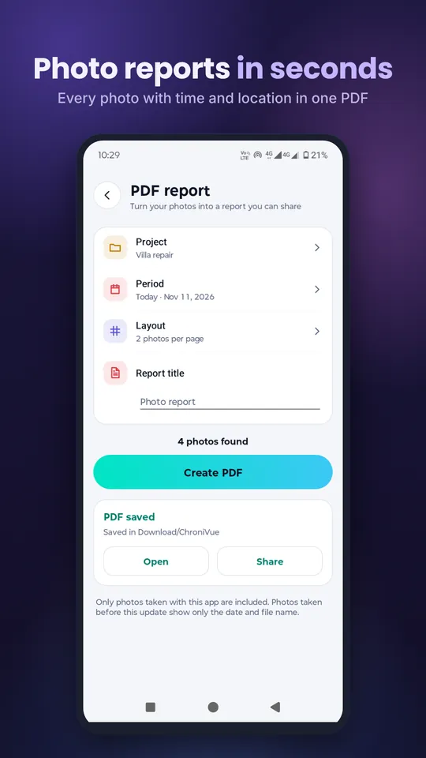
Projects
Create a project for each job or site in Settings → Projects & reports. Photos and videos of the active project are saved in its own folder, and each project keeps its own tags and custom text. Deleting a project never deletes photos.
PDF report
Turn your photos into one PDF with the time, location and address of each photo. Choose a project, tag or period, a layout and a title, then share it. Saved in Download/ChroniVue.
Before / after
Turn on the compare button, pick an earlier photo, and line up the new one with the faint overlay.
6Settings, step by step
Every picture below is from the real app. The orange numbers match the list next to it. Changes are saved at once, and the preview at the top shows how your photo will look.
Watermark
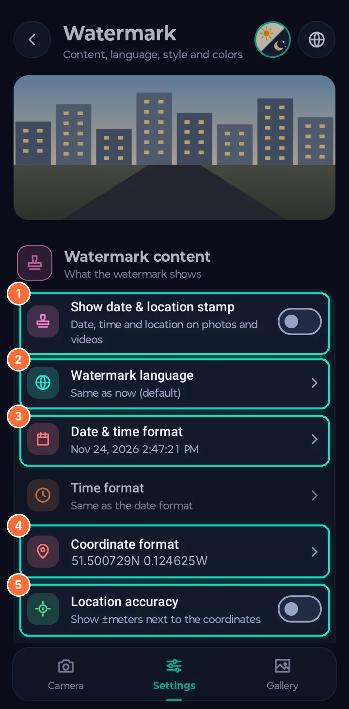
Stamp on/off, language and format
- Show date & location stamp The main switch. Turn it off to take photos without any stamp.
- Watermark language Write the stamp in another language (Bangla and Arabic use their own digits).
- Date & time format Choose how the date looks. Time format can be 12 or 24 hour.
- Coordinate format Decimal (51.5007N) or degrees, minutes, seconds.
- Location accuracy Shows ±meters next to the coordinates.
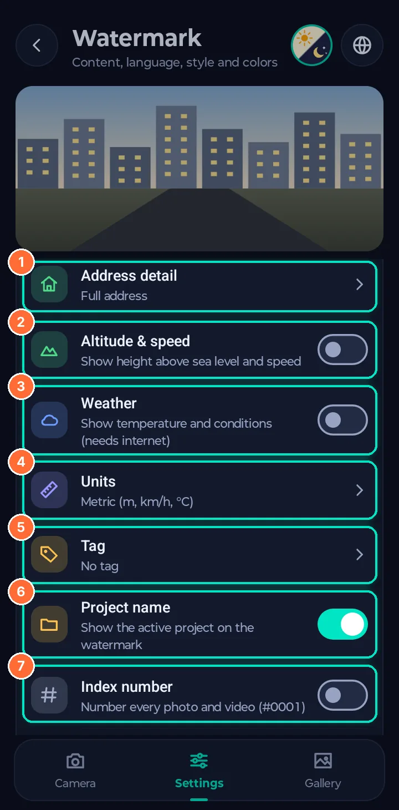
What else the stamp shows
- Address detail From a short place name to the full address (needs internet the first time).
- Altitude & speed Height above sea level and speed.
- Weather Temperature and conditions (needs internet).
- Units Metric (m, km/h, °C) or imperial.
- Tag Pick or edit tags like Before, After, Site A.
- Project name Shows the active project on the stamp.
- Index number Numbers every photo and video (#0001).
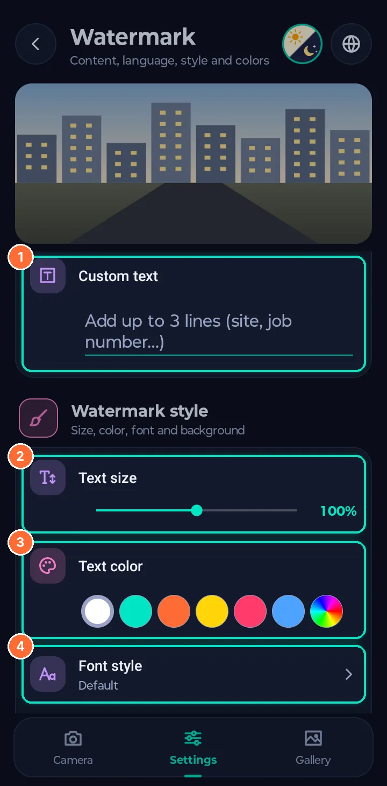
Your own text and style
- Custom text Up to 3 lines, like a site name or job number.
- Text size Drag the slider to make the stamp bigger or smaller.
- Text color Tap a color. The rainbow circle lets you pick any color.
- Font style Choose a different font.
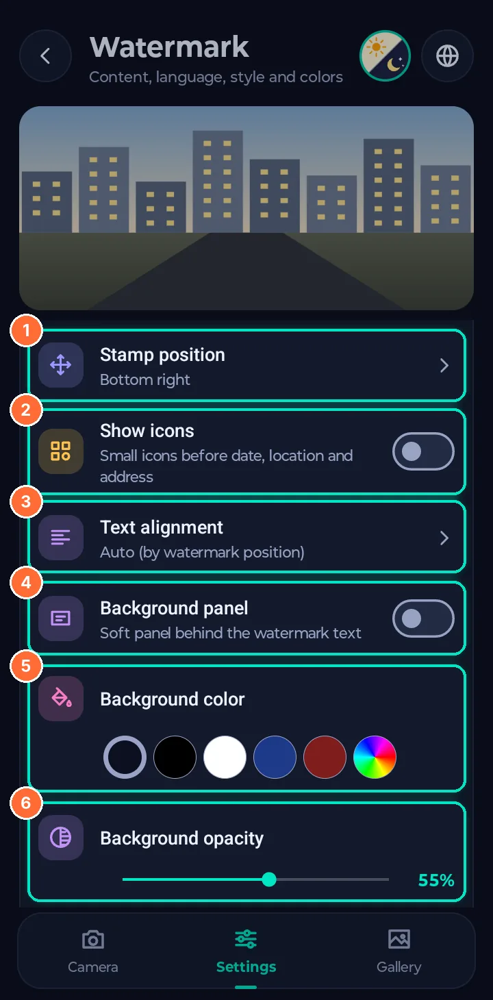
Position and background
- Stamp position Which corner the stamp sits in.
- Show icons Small icons before date, location and address.
- Text alignment Left, right or automatic.
- Background panel A soft panel behind the text, easier to read on bright photos.
- Background color Color of the panel.
- Background opacity How see-through the panel is. Text opacity is just below.
Map, QR & compass
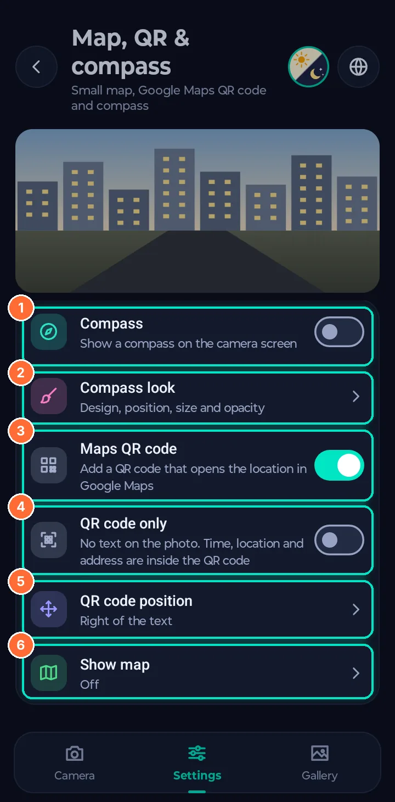
Compass, QR code and map
- Compass Shows a compass on the camera screen.
- Compass look Design, position, size and opacity (picture below).
- Maps QR code Adds a QR code that opens the exact spot in Google Maps.
- QR code only A clean photo: no text, everything is inside the QR code.
- QR code position Right or left of the text.
- Show map Opens the map page, where you turn the map on.
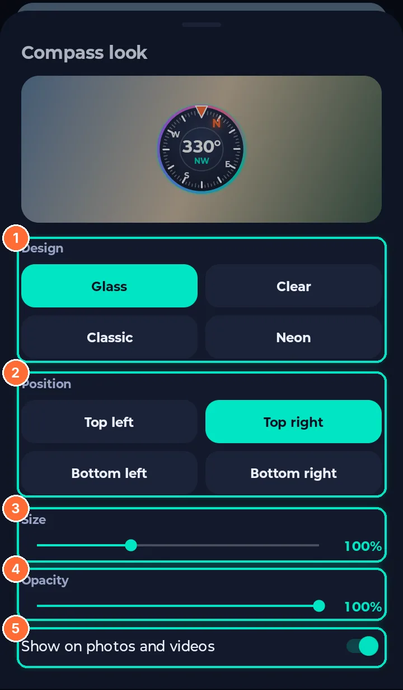
Compass look
- Design Glass, Clear, Classic or Neon.
- Position Any corner of the screen.
- Size Make it bigger or smaller.
- Opacity How see-through it is.
- Show on photos and videos Also prints the compass on your pictures.
Tip: on the camera screen, press and hold the compass to open this page directly.
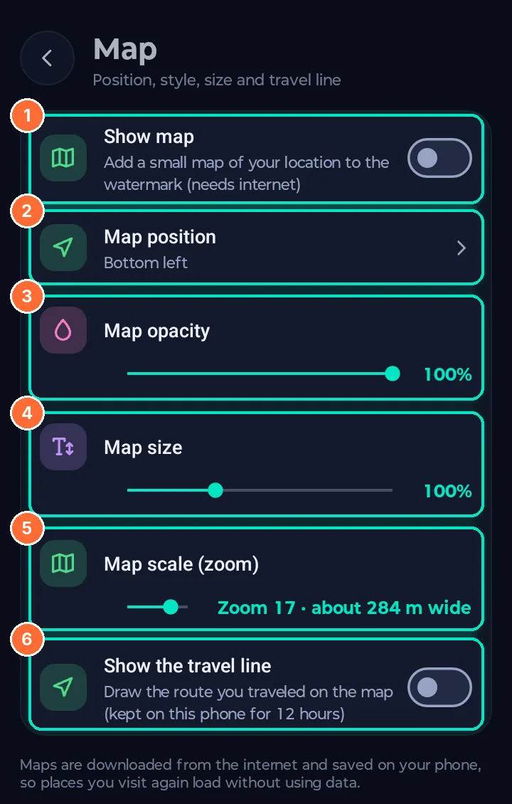
Map on your photos
- Show map Turn on to add a small map (needs internet the first time at a place).
- Map position Choose a corner.
- Map opacity How see-through the map is.
- Map size Bigger or smaller map.
- Map scale (zoom) How much area the map shows, e.g. “about 284 m wide”.
- Show the travel line Draws your route of the last 12 hours on the map.
Brand
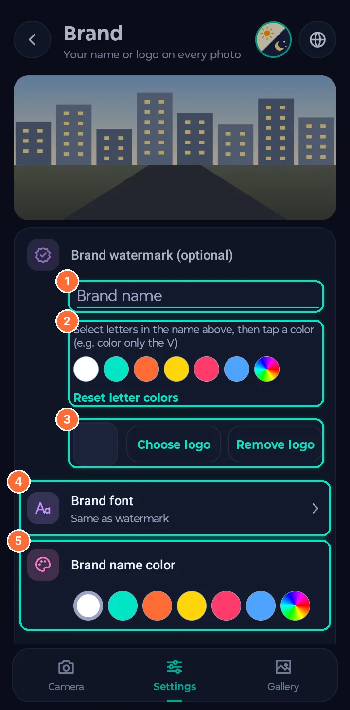
Your name and logo
- Brand name Type your company or your own name.
- Letter colors Select some letters in the name, then tap a color. “Reset letter colors” undoes it.
- Choose logo Pick a logo image from your gallery. “Remove logo” takes it off.
- Brand font 11 fonts, or the same as the stamp.
- Brand name color Color of the whole name.
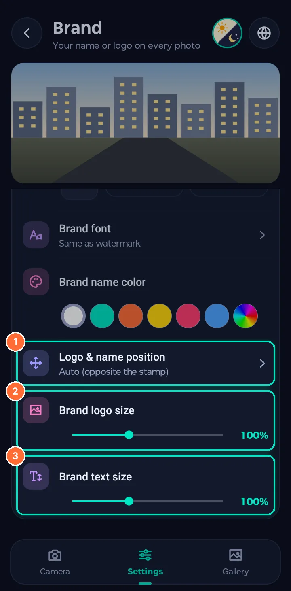
Position and size
- Logo & name position Auto puts it opposite the stamp so they never overlap, or choose a place.
- Brand logo size Make the logo bigger or smaller.
- Brand text size Make the name bigger or smaller.
Camera
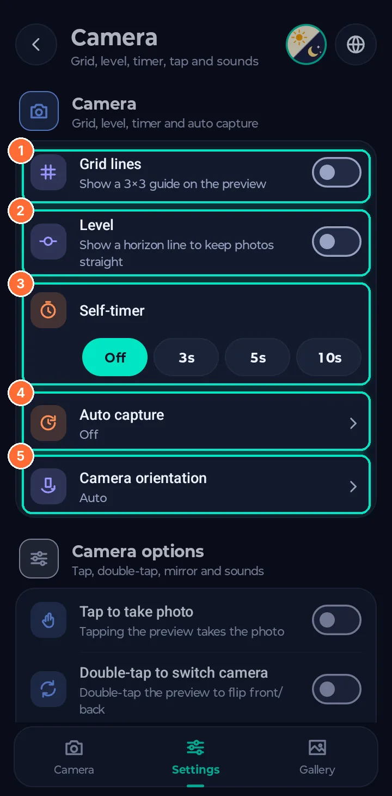
Grid, level and timer
- Grid lines A 3×3 guide for better framing.
- Level A horizon line to keep photos straight.
- Self-timer Off, 3, 5 or 10 seconds.
- Auto capture Takes photos by itself every few seconds.
- Camera orientation Auto, or lock the camera to one direction.
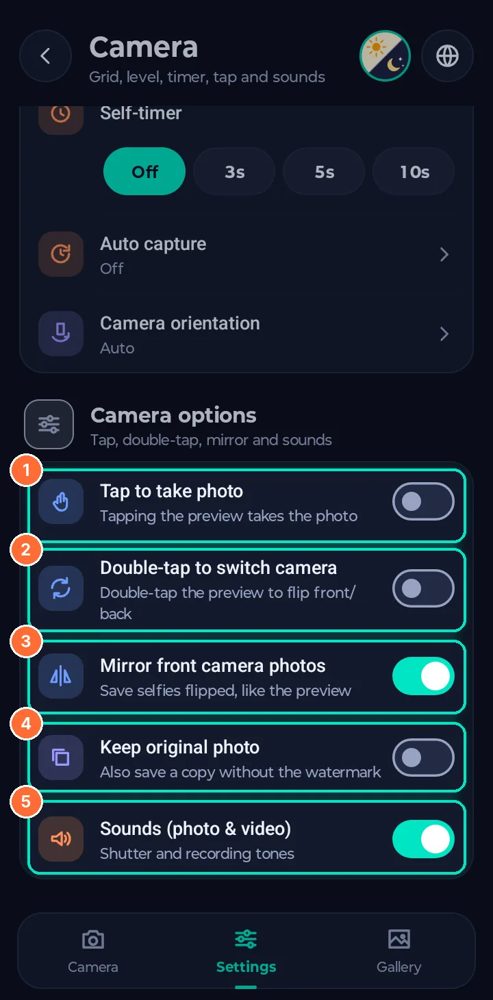
Tap, mirror and sounds
- Tap to take photo Tap anywhere on the preview to shoot.
- Double-tap to switch camera Double-tap to flip front and back.
- Mirror front camera photos Save selfies like you see them.
- Keep original photo Also saves a copy without the stamp.
- Sounds Shutter and recording tones on or off.
Main screen
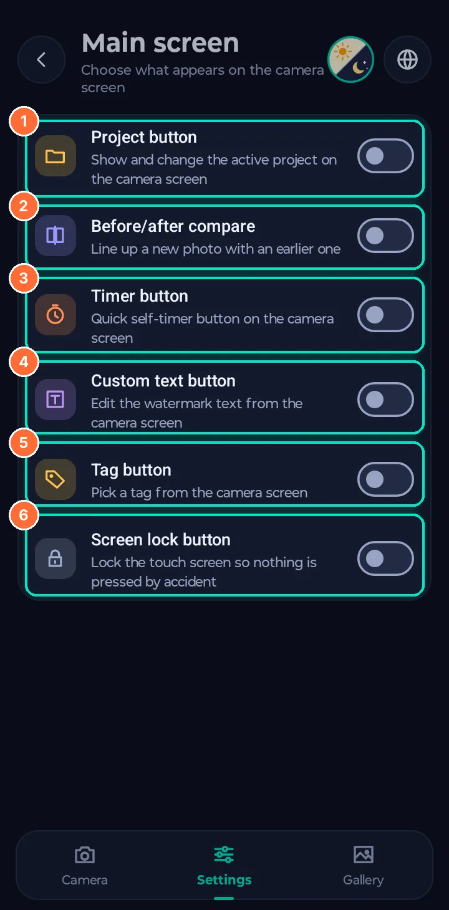
Extra buttons on the camera screen
- Project button Shows and changes the active project.
- Before/after compare Line up a new photo with an earlier one.
- Timer button Quick self-timer.
- Custom text button Edit the stamp text without opening Settings.
- Tag button Pick a tag quickly.
- Screen lock button Locks the screen. Press and hold the lock to unlock.
Quality & video
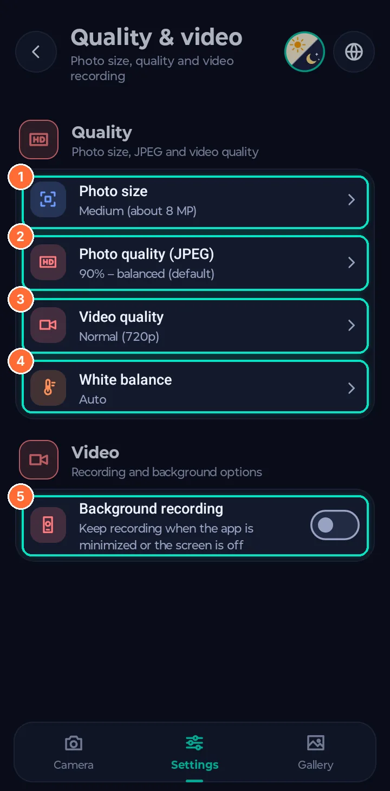
Photo and video quality
- Photo size Bigger size = more detail, bigger files. Medium (about 8 MP) is a good choice.
- Photo quality (JPEG) 90% is balanced. Lower = smaller files.
- Video quality For example Normal (720p) or higher.
- White balance Auto, or set it for the light you are in.
- Background recording Keeps recording when you leave the app or the screen is off.
Files & about
Save folder
DCIM/Camera, DCIM/ChroniVue or your own folder inside DCIM.
Reset all settings
Returns every setting to default. Projects and photos are kept.
Feedback & share
Send us a problem or idea by email, or share ChroniVue with a link or QR code.
7Where files are saved
| What | Where on your phone |
|---|---|
| Photos & videos | DCIM/Camera, DCIM/ChroniVue or your chosen folder (open them in your gallery) |
| Project photos | DCIM/ChroniVue/<project name> |
| Scanned pages (images) | Your photo folder |
| Scan PDFs & reports | Download/ChroniVue (open with Files or a PDF app) |
8Problems & answers
The location is missing or wrong
Check that phone location is on and ChroniVue has location permission (Settings → Apps → ChroniVue → Permissions). Indoors, GPS can be slow or less exact; step near a window or outside for a few seconds. The ±meters value shows how exact the fix is.
The address or map doesn't show
The address and map need internet the first time at a place. Coordinates and the QR code always work offline. Places you visited before load without data.
Will I lose my settings when I update?
No. Updates keep your settings, brand, projects and photos. When a new version is ready, ChroniVue shows an update message; tap Update now.
The scanner doesn't find the corners
Use more light, hold the phone above the page, and put the page on a surface of a different color. You can always drag the corners by hand or use Manual mode.
I can't find my PDF
Open the Files app and go to Download → ChroniVue.
The video stamp appears a few seconds after recording
A few phones can't stamp while recording, so ChroniVue adds it right after you stop. The original video is never lost.
The phone says storage is full
ChroniVue checks free space before saving. Delete some files or move them to a computer, then try again.
Something else?
Write to chronivue.support@gmail.com or use Settings → Send feedback. Include your phone model if you can.